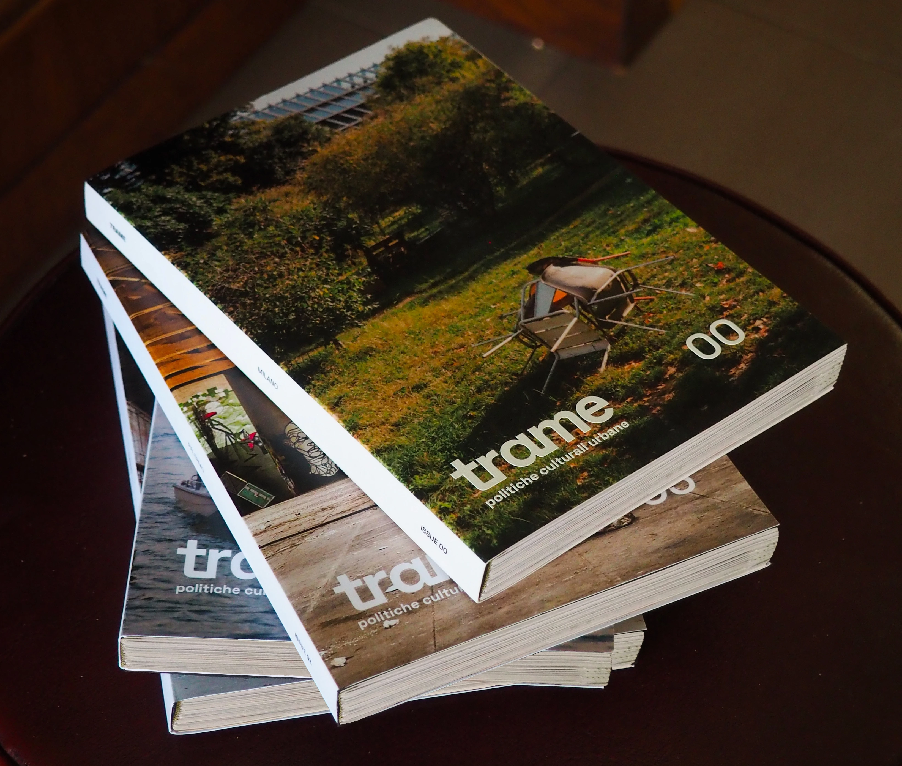
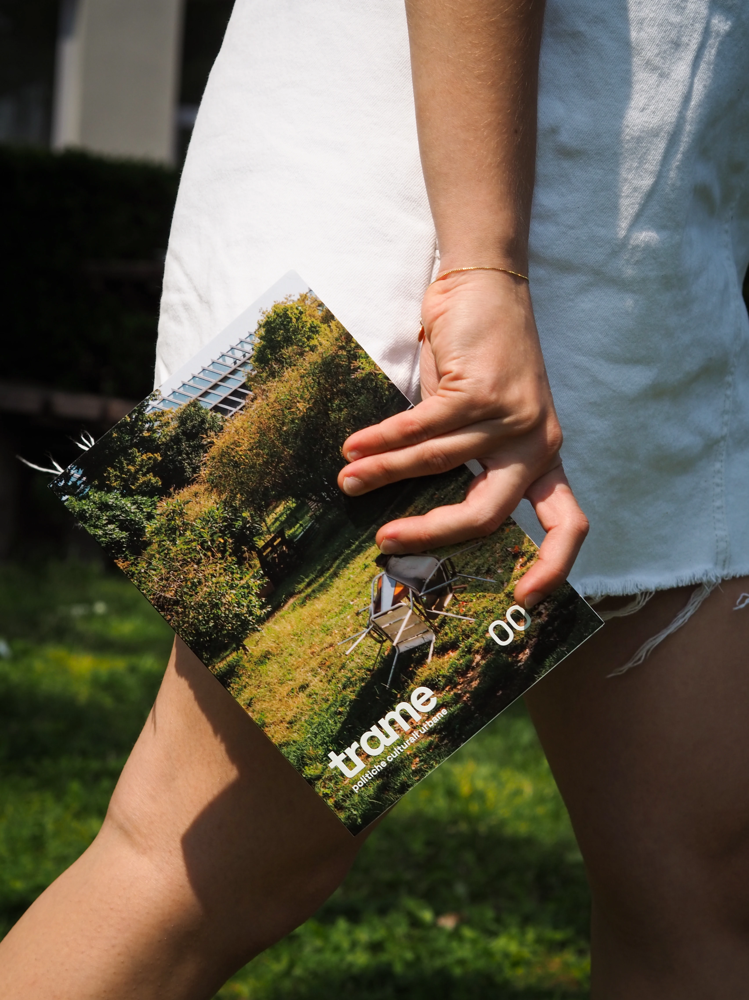
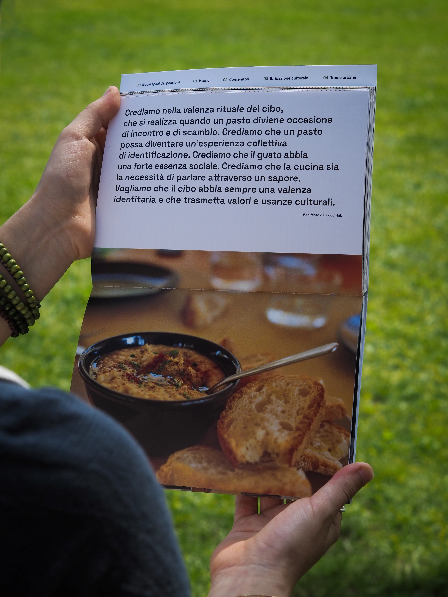
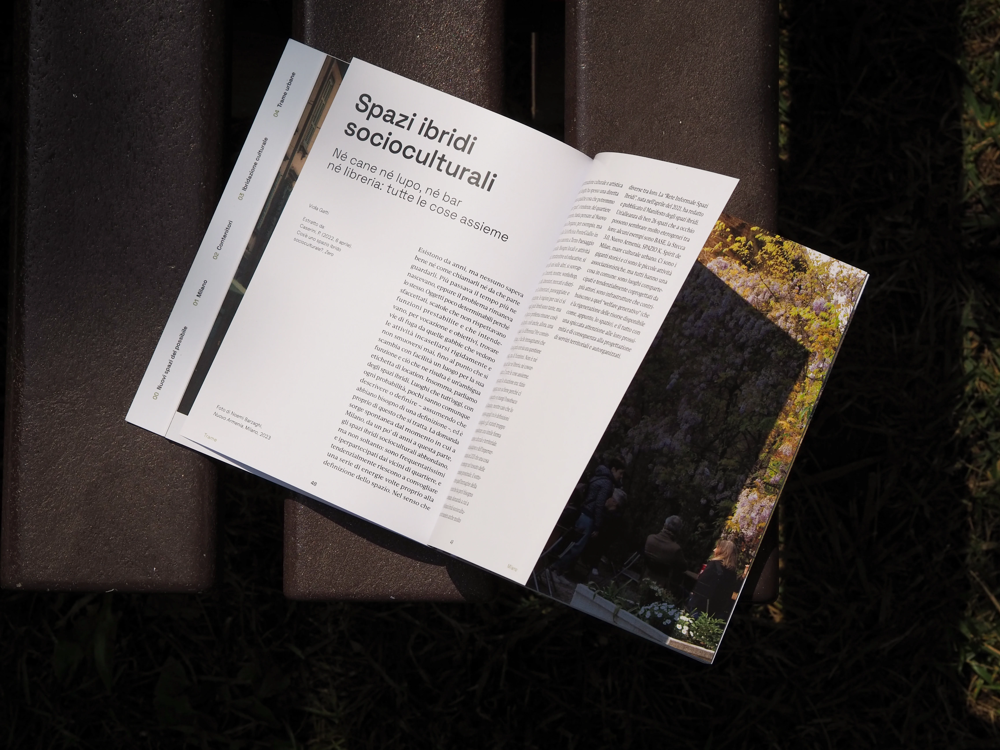
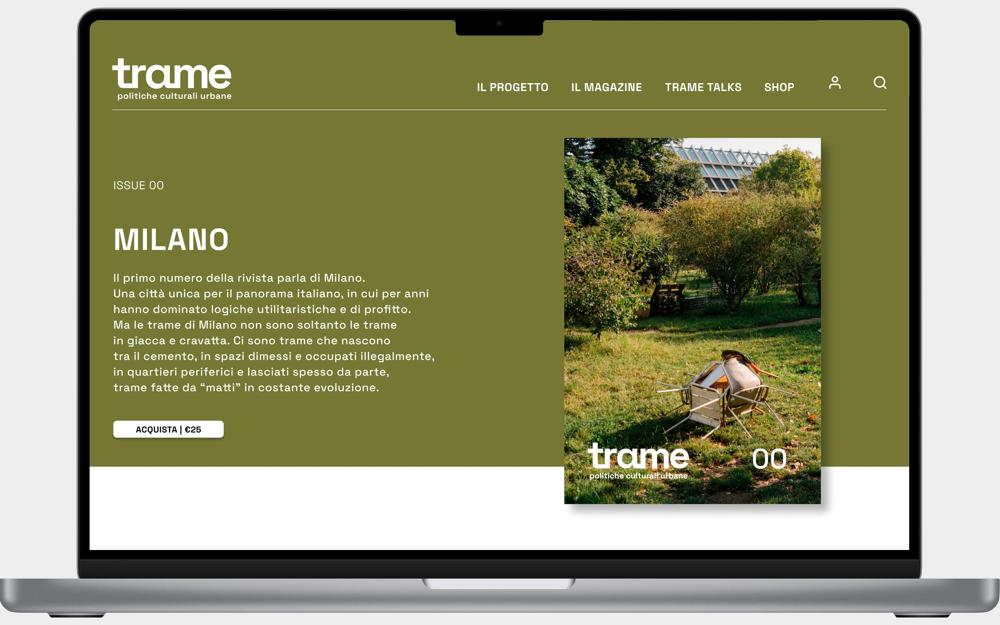
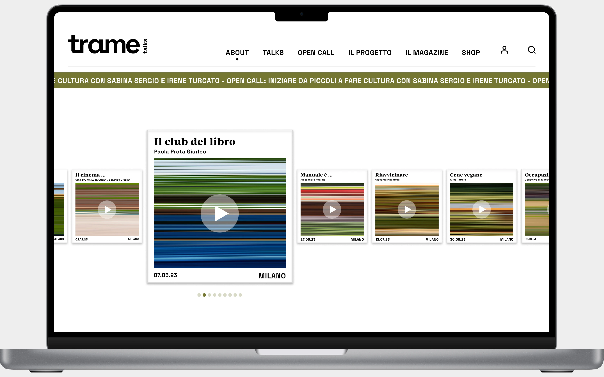

→ ISSUES

Trame is a semi-annual magazine that chronicles the hybrid spaces found in Italian cities. Specifically, each Issue, delves into the spaces found in a specific city. Issue number 0 is the one that deals with Milan and then continues with Turin, Palermo and Venice.
→ CONTENTS



The first issue is about Milan, a city chosen for the many socio-cultural realities it hosts and the fervent need to make them known. In such a dispersed city, the urgency of connecting and linking hybrid spaces emerges clearly. The magazine is divided internally into five sections: an initial introductory, one on the kind of spaces addressed, one on the specific city, one on places understood as physical spaces followed by an in-depth look at cultural activities, and finally an excursus on networking.
→ TRAME TALKS


The Trame narrative continues with TrameTalks, a website featuring podcasts and in-depth thematic content. This platform explores social and cultural themes through the voices of prominent figures in the urban socio-cultural landscape. It is open to public listening, offering the opportunity to participate actively in the debate by sharing personal opinions, experiences, and contributions.
→ VIDEO
launching video for trame magazine..